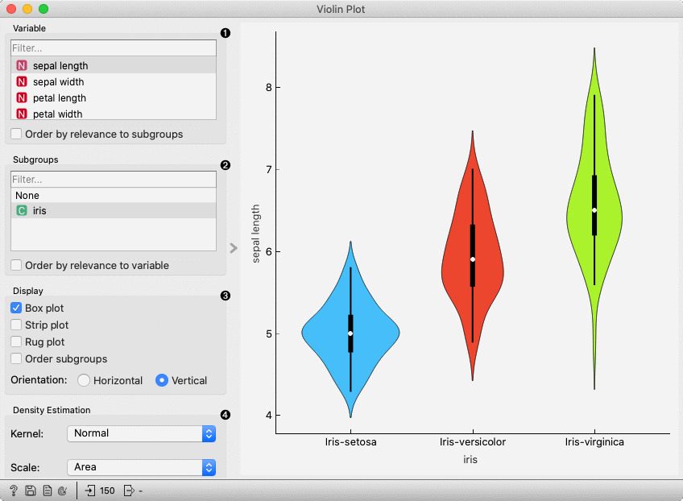
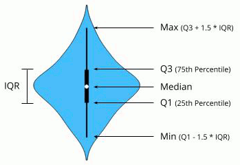
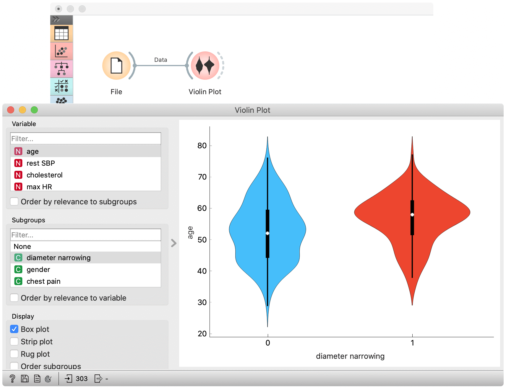
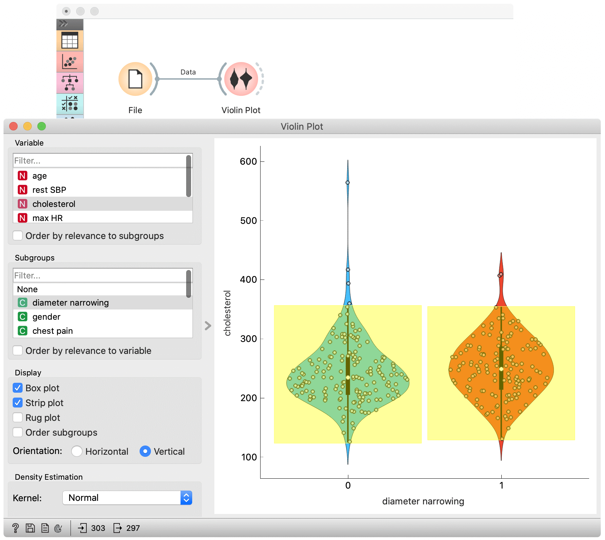

Violin Plot
Visualize the distribution of feature values in a violin plot.
Inputs
- Data: input dataset
Outputs
- Selected Data: instances selected from the plot
- Data: data with an additional column showing whether a point is selected
The Violin Plot widget plays a similar role as a Box Plot. It shows the distribution of quantitative data across several levels of a categorical variable such that those distributions can be compared. Unlike the Box Plot, in which all of the plot components correspond to actual data points, the Violin Plot features a kernel density estimation of the underlying distribution.

Select the variable you want to plot. Tick Order by relevance to subgroups to order variables by Chi2 or ANOVA over the selected subgroup.
Choose Subgroups to see violin plots displayed by a discrete subgroup. Tick Order by relevance to variable to order subgroups by Chi2 or ANOVA over the selected variable.
Box plot: Tick to show the underlying box plot. 
Strip plot: Tick to show the underlying data represented by points.
Rug plot: Tick to show the underlying data represented by lines.
Order subgroups: Tick to order violins by median (ascending).
Orientation: Determine violin orientation.
Kernel: Select the kernel used to estimate the density. Possible kernels are: Normal, Epanechnikov and Linear.
Scale: Select the method used to scale the width of each violin. If area is selected, each violin will have the same area. If count is selected, the width of the violins will be scaled by the number of observations in that bin. If width is selected, each violin will have the same width.
Examples
The Violin Plot widget is most commonly used immediately after the File widget to observe the statistical properties of a dataset. In the first example, we have used heart-disease data to inspect our variables.

The Violin Plot could also be used for outlier detection. In the next example we eliminate the outliers by selecting only instances that fall inside the Q1 − 1.5 and Q3 + 1.5 IQR.
